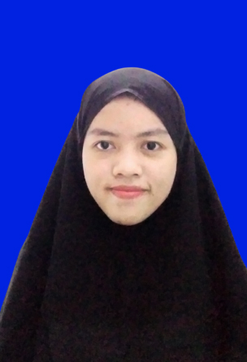

Saya Firah Atika, NIM: 41215384
Saya adalah seorang Mahasiswa di STMIK IKMI Cirebon, memiliki kemampuan membuat Desain drafis menggunakan Corel draw dan photoshop dengan baik , Saya juga adalah orang yang bertanggung jawab, senang untuk belajar dan dapat bekerja secara mandiri maupun kelompokdalam tim dengan baik